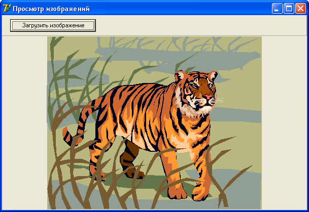
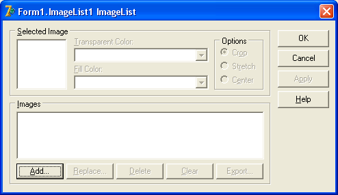

Украшательства проекта
Сегодня займемся украшательством проектов – будем добавлять в проект изображения самыми разными способами.
Вы должны помнить, что не стоит перенасыщать проект, создавать фон форм диких расцветок, тут и там вставлять совершенно ненужные картинки.
Все это говорит не только о непрофессионализме, но и о дурном вкусе.
Однако иногда украшательства не мешают, а наоборот, создают для проекта особый стиль.
Вспомните о проигрывателе WinAMP – он практически весь состоит из таких вот украшательств, но это оправдано, так как программа эмулирует обычный бытовой проигрыватель.
Другими словами, нужно уметь вставлять в проект изображения, но при этом иметь чувство меры.
Нам придется изучить несколько полезных компонентов.
Создайте новое приложение.
Image
Компонент находится на вкладке компонентов Additional и представляет собой контейнер прямоугольной формы, в который можно поместить картинку.
Установите его на форму, и посмотрите на его свойства.
Свойство AutoSize заставляет компонент автоматически принимать размер изображения, если установлено True.
Свойство Picture – основное свойство компонента.
Оно позволяет открыть диалоговое окно, в котором можно выбрать изображение для загрузки в контейнер.
Для этого нужно нажать на кнопку с тремя точками в правой части свойства.
Затем нажать кнопку Load для загрузки изображения.
Свойство Center разместит изображение по центру контейнера, если AutoSize не равно True.
Иначе свойство игнорируется.
Свойство Proportional разрешает или запрещает пропорционально уменьшать высоту и ширину изображения, если оно не может целиком уместиться в контейнере.
Свойство Stretch разрешает или запрещает изображению целиком заполнять контейнер.
Давайте напишем простой браузер для изображений, программу, которая позволит просматривать файлы графических форматов.
Новое приложение у вас уже создано, добавьте на форму простую панель, переместите ее вверх формы, и свойство Align сделайте alTop (панель должна занять весь верх формы).
Очистите свойство Caption панели, и у нас получилась панель инструментов.
Правда, нам нужен только один инструмент – кнопка для загрузки изображений.
Установите на панель кнопку, напишите на ней "Загрузить изображение".
Свойство Align компонента Image установите в alClient, чтобы растянуть его по всей оставшейся части формы.
У этого контейнера должны быть следующие настройки в Объектном инспекторе:
AutoSize = False; Center = True; Proportional = True; Stretch = True;
Теперь установите на любое место компонент OpenPictureDialog с вкладки Dialogs палитры компонентов.
Этот компонент работает точно также, как диалог открытия файлов, только он предназначен для открытия изображений.
Создайте обработчик событий для нажатия на кнопку, и там напишите код:
if OpenPictureDialog1.Execute then Image1.Picture.LoadFromFile(OpenPictureDialog1.FileName);
Вот и весь браузер!
По нажатию на кнопку программа будет выводить диалог открытия изображения.
Выбрав изображение, вы загрузите его в контейнер Image.
Сохраните проект, скомпилируйте и посмотрите, как работает приложение.
Для просмотра подойдут любые изображения – картинки, фотографии и т.п.
Если у вас на компьютере установлен пакет MS Office XP/2000 или выше, то большую коллекцию картинок вы сможете найти на:
C:\Program Files\MicroSoft Office\Media\cagcat10
Программа с загруженной картинкой должна выглядеть так:
Если же по вашему замыслу требуется установить какую-то одну картинку для улучшения дизайна формы, то вы можете загрузить эту картинку напрямую, через свойство Picture компонента, в Объектном инспекторе.
ImageList
Компонент находится на вкладке Win32 и предназначен для хранения нескольких изображений.
Этот компонент используется во многих случаях – для хранения коллекции изображений, вставляемых в главное и всплывающее меню программы, когда слева от команды выводится и картинка, для вывода изображений на кнопки панелей инструментов, и так далее.
Изучим этот компонент на практике.
Создайте новое приложение. Установите на форму компонент MainMenu и ImageList.
Далее, в главном меню создайте разделы "Файл" и "Помощь".
В разделе "Файл" создайте подразделы "Открыть", "Сохранить", "-" и "Выход".
А в разделе "Помощь" - подраздел "О программе".
Теперь дважды щелкните по компоненту ImageList.
Откроется диалоговое окно загрузки изображений:
Воспользуемся теми самыми стандартными изображениями, которые мы использовали для кнопок.
Нажмите кнопку "Add" (добавить изображение) и перейдите в каталог со стандартными картинками для кнопок:
C:\Program Files\Common Files\Borland Shared\Images\Buttons
Выберем картинку "Fileopen".
Тут же выходит запрос, в котором говорится, что картинка состоит из 2-х изображений, и спрашивается, хотите ли вы разбить его на 2 картинки?
Дело в том, что стандартные изображения для кнопок состоят из двух рисунков – когда кнопка находится в активном состоянии (Enabled = True), и в неактивном.
В ImageList же можно ввести только одну картинку.
Отвечайте "Yes".
Двойное изображение будет разбито, и в окно попадут две картинки.
Выделите серую картинку и нажмите кнопку "Delete", чтобы удалить ее из списка, она нам не нужна.
В большинстве случаев для команды меню достаточно одного изображения.
Если вы сделаете команду неактивной, Delphi самостоятельно меняет это изображение, рисунок выходит серым цветом.
Тоже самое сделайте с картинками "Filesave", "Dooropen" и "Help".
Как видите, индекс изображений начинается с нуля.
Нажмите кнопку "ОК", чтобы принять список изображений.
Теперь выделите компонент MainMenu, и в свойстве Images выберите наш ImageList.
Дважды щелкните по MainMenu, чтобы открылось окно редактора меню.
Выделите пункт "Открыть" (щелкайте по нему один раз, а не два, иначе создастся обработчик событий).
Свойство команды меню ImageIndex отвечает за то, какое именно изображение будет соответствовать этой команде.
По умолчанию оно равно -1, то есть, картинка не выбрана.
Первая картинка имеет индекс 0, вторая – 1, и так далее.
Выберите изображение из картинки FileOpen, оно должно быть первым.
Вы можете выбрать любое изображение, не обязательно по порядку.
Для пункта "Сохранить" выбирайте второе изображение, для "Выход" - третье, а для "О программе" - последнее.
Закройте редактор меню, и откройте меню на форме.
Вы должны увидеть, что слева от текста появились наши картинки.
Вот таким простым образом можно украсить наше меню.
Кстати, то же самое справедливо и для всплывающего PopupMenu.
Попробуйте самостоятельно добавить в него такие же команды, как в разделе "Файл", и применить для них те же картинки (для этого не нужно создавать еще один ImageList, можно воспользоваться этим же).